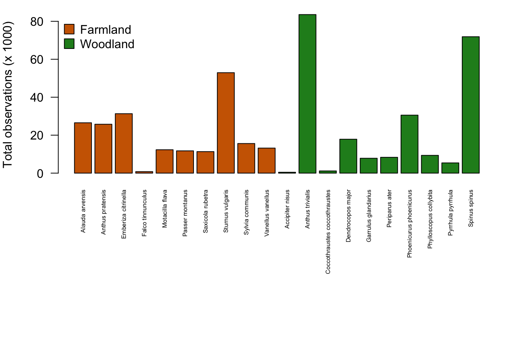
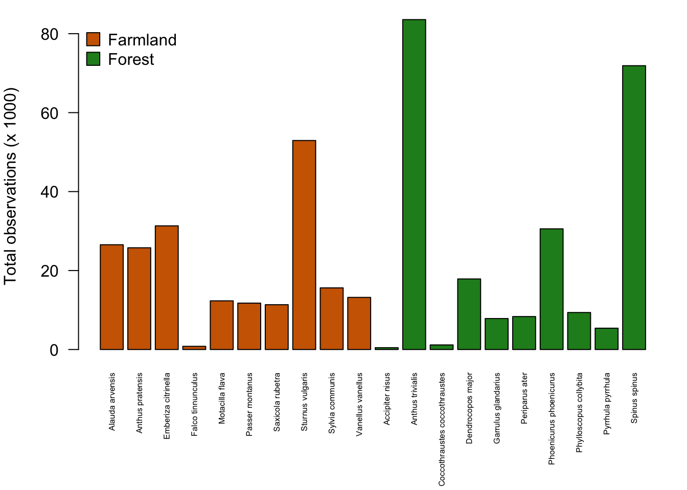
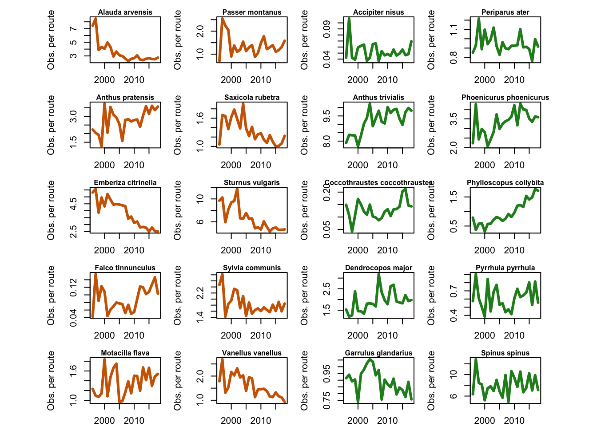
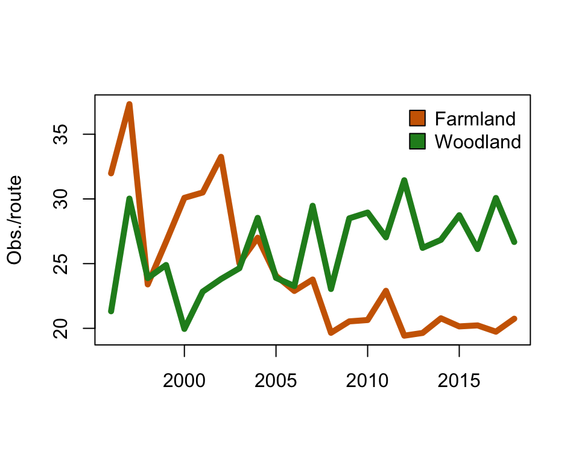

This exercise is designed to familiarize you with data from The Swedish Bird Inventory (Svensk Fågeltaxering). On this website, you can read more about the dataset (field protocol, history, etc.). A secondary aim is to continue improving your skills with R.
You can download the data for this exercise here. The dataset posted to the course website is a reduced version of the full dataset, which is available from the GBIF website.
Move the downloaded .csv file into your project folder (working directory) and then read the data into R:
Below, you can find two lists of ten common bird species associated with farmlands and woodland habitats. The dataset we are working with here has been reduced to include only these species and only a few columns with the most relevant information. Click on the names to get more information in the species and to see some nice pictures!
Let’s start by looking some quick summaries of the dataset in order to get a feel for its content and structure.
## locationID year species individualCount decimalLongitude
## 1 1 1997 Alauda arvensis 2 13.229
## 2 1 1999 Alauda arvensis 1 13.229
## 3 1 2007 Alauda arvensis 3 13.229
## decimalLatitude habitat
## 1 55.565 Farms
## 2 55.565 Farms
## 3 55.565 FarmsIn this dataset, each row (or, each observation) represents the count of a species in a given year, in a given survey route. The first row, for example, says that there were 2 individuals of Alauda arvensis observed in route number 1 during the year 1997. Here’s a description of the columns:
We might be interested to first get an aggregated summary of the data. For instance, let us look at the total abundance of the different species for all routes and for all years. To do this, we will first create a data.frame to hold information at the species-level.
Now we can use the tapply function to sum the counts of each species.
# Sum counts for each species (over all years)
total_counts <- tapply(birds$individualCount, birds$species, sum)
total_countsWarning! Notice the total_counts vector is in alphabetical order (this is the default behavior for tapply output). But the spdata data.frame is sorted by habitat affiliation. This will lead to incorrect results if we simply join the total_counts vector to the spdata data.frame.
# We can use the `match` function to line things up correctly
spdata$total_count <- total_counts[match(spdata$species, names(total_counts))]
# Make a vector of colors for plotting
spdata$col <- ifelse(spdata$habitat %in% "Farms", "darkorange3", "forestgreen")
# Set figure margins for plotting
par(mar=c(13,4,1,1))
# Create a barplot of total counts per species
barplot(spdata$total_count/1000,
names.arg=spdata$species,
las=2, col=spdata$col,
ylab="Total observations (x 1000)",
cex.names=0.5)
# Add a legend to the plot
legend("topleft", legend=c("Farmland","Woodland"),
pch=22, pt.bg=c("darkorange3", "forestgreen"),
bty="n", pt.cex=2)
Next we’ll plot the change in counts through time for each species. To do so, we will use a programming tool called a for loop. For loops are iterative operations that loop over a program by using an index. It is probably easiest to digest with a simple example.
In the code below, the first line starts the for loop and says to use the index “year” for values 2010 through 2015. Everything inside the curly brackets { } will be executed as the index, “year”, iterates through the specified range of values. In this example, we ask R to print a phrase about which year it is. A pause of 0.5 seconds is included so that you can watch the iteration happening.
That was a trivial example but hopefully you get the general idea. Let’s try using a more complex for loop to plot the temporal trends for each bird species in our dataset.
# First set the layout and margins of the figure
par(mfcol=c(5,4), mar=c(2,4,1.5,1), oma=c(0,4,0,4))
# Now we will use a `for loop` to cycle through each species.
# The first line says to use the index "i" for 1 through the
# total number of bird species (20 in our case).
for (i in 1:length(unique(birds$species))){
# Next we subset the data corresponding to the i-th species
focal_data <- birds[birds$species %in% unique(birds$species)[i],]
# Next we compute the counts per year for the i-th species
trend <- tapply(focal_data$individualCount, focal_data$year, sum)
# Now we plot the trend through time for the i-th species
plot(names(trend), trend,
type="l", ylab="Total Obs.", xlab=NA,
col=ifelse("Farms" %in% focal_data$habitat, "darkorange3", "forestgreen"),
lwd=3)
# Last, add a title at the top of the panel with the name of the species
mtext(unique(birds$species)[i], 3, 0, cex=0.5, font=2)
}
Ok…what’s going on? Are you surprised to see that the trends for all species appear to be increasing? Are birds really taking over Sweden?!? No, unfortunately not…
The general increase in total observations per species is at least partly due to the fact that the inventory added new survey routes during the first years and they sample a different number of routes each year. This is problematic for making valid comparisons between years because we are obviously likely to count more birds when we survey more routes (think back to our lecture on rarefaction).
Now let’s try and correct for the different number of routes sampled per year by computing the number of counts per species per year per survey route.
# Compute the number of routes recorded for each year
nroutes <- colSums(table(birds$locationID, birds$year) > 0)
# Let's redo the figure by dividing the number of observations
# per species per year by the number of routes surveyed each year
par(mfcol=c(5,4), mar=c(2,4,1.5,1), oma=c(0,4,0,4))
for (i in 1:length(unique(birds$species))){
focal_data <- birds[birds$species %in% unique(birds$species)[i],]
# Plot a panel for each species (note that we now divide by 'nroutes')
plot(sort(unique(focal_data$year)),
tapply(focal_data$individualCount, focal_data$year, sum)/nroutes,
type="l", ylab="Obs. per route", xlab=NA, lwd=3,
col=ifelse("Farms" %in% focal_data$habitat, "darkorange3", "forestgreen"))
mtext(unique(birds$species)[i], 3, 0, cex=0.5, font=2)
}
Now we’ve investigated species-specific trends but we may be interested to know if there are general trends for the two habitat groups. There are, as always, several ways of doing this but we will try one.
# First split the dataset into separate woodland and farmland species datasets
farmland_birds <- birds[birds$habitat == "Farms",]
woodland_birds <- birds[birds$habitat == "Woods",]
# Next count the total observations per year for each group
farmland_birds_counts <- tapply(farmland_birds$individualCount, farmland_birds$year, sum)
woodland_birds_counts <- tapply(woodland_birds$individualCount, woodland_birds$year, sum)
# Don't forget to correct for number of routes sampled!
farmland_birds_counts <- farmland_birds_counts/nroutes
woodland_birds_counts <- woodland_birds_counts/nroutes
# Plot the results
plot(names(farmland_birds_counts),
farmland_birds_counts,
type="l", col="darkorange3", lwd=5,
xlab=NA, ylab="Obs./route")
lines(names(woodland_birds_counts),
woodland_birds_counts,
type="l", col="forestgreen", lwd=5)
legend("topright", legend=c("Farmland","Woodland"),
pch=22, pt.bg=c("darkorange3", "forestgreen"),
bty="n", pt.cex=2)